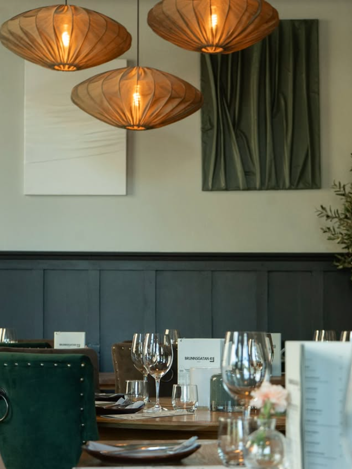

Vår historia
Ett vardagsrum
med öppen köksdörr.
Bakom de handkarvade tegelväggarna på Brunnsgatan 41 delar kök och matsal samma rum. Ingen linje, inget avstånd, bara ett golv där kockarna hör klirret från glasen och gästerna ser elden i grillen.
Vi tror på det enkla: riktigt bra råvaror, hantverk utan krångel, och en atmosfär där människor stannar länge efter sista tuggan.
Läs hela vår historia →